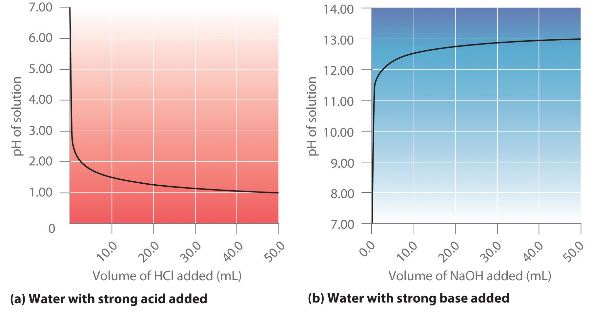
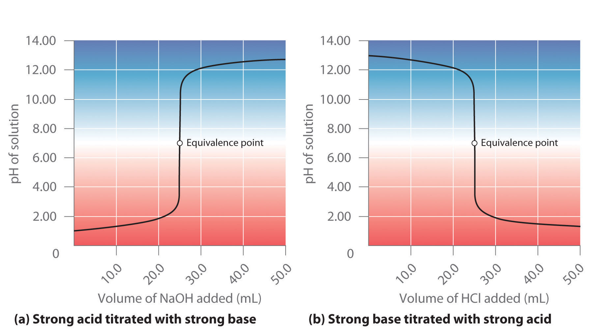
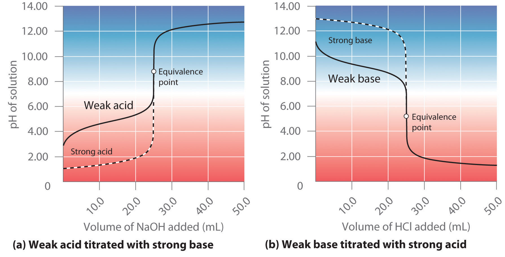
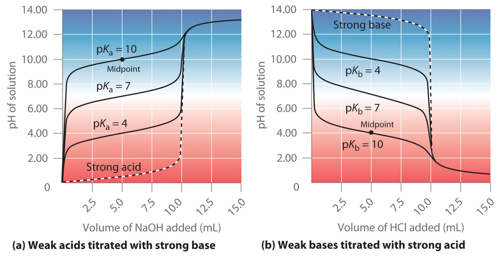
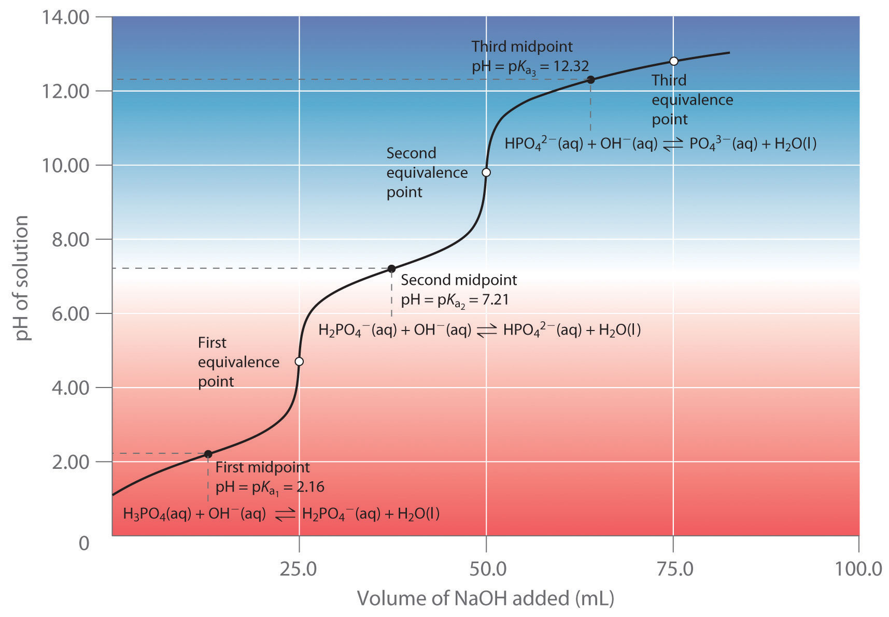
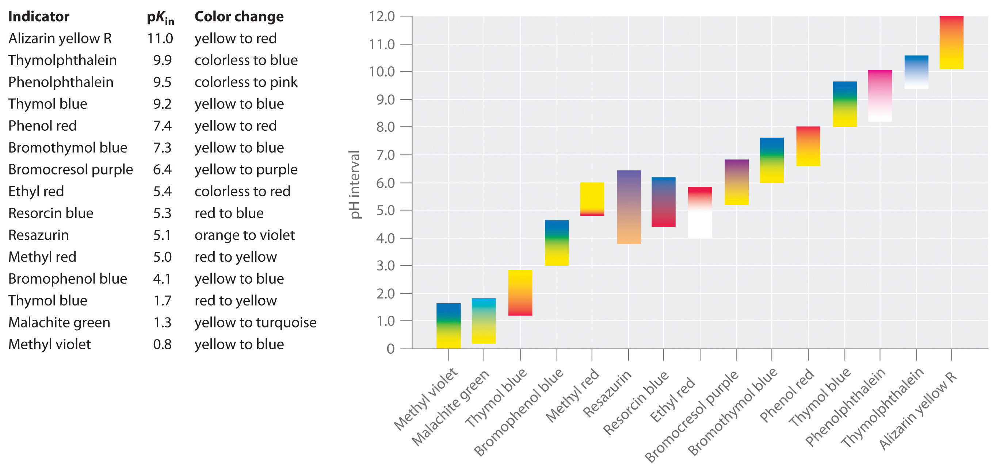
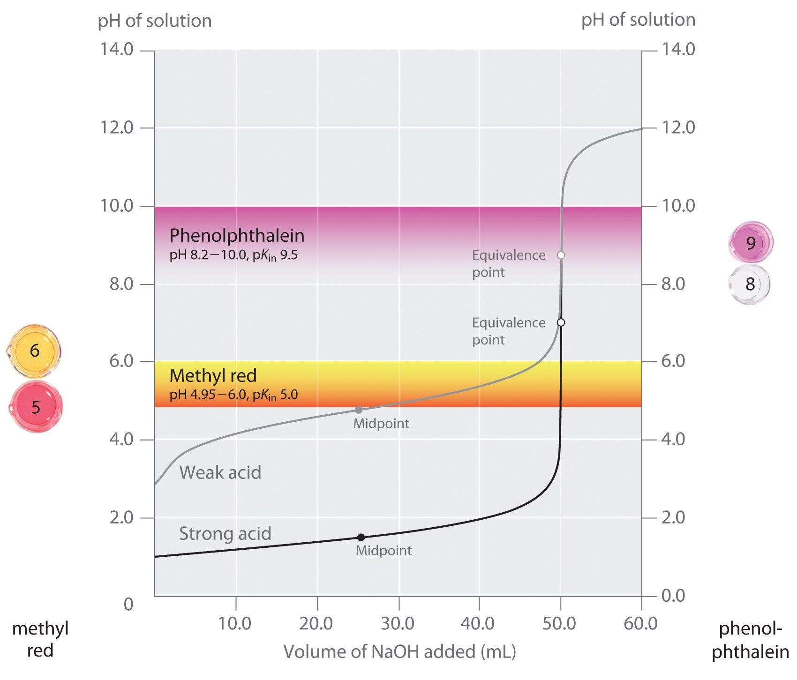

In Chapter 4 "Reactions in Aqueous Solution", you learned that in an acid–base titration, a buret is used to deliver measured volumes of an acid or a base solution of known concentration (the titrant) to a flask that contains a solution of a base or an acid, respectively, of unknown concentration (the unknown). If the concentration of the titrant is known, then the concentration of the unknown can be determined. The following discussion focuses on the pH changes that occur during an acid–base titration. Plotting the pH of the solution in the flask against the amount of acid or base added produces a titration curveA plot of the pH of the solution being titrated versus the amount of acid or base (of known concentration) added.. The shape of the curve provides important information about what is occurring in solution during the titration.
Part (a) of Figure 16.17 "Solution pH as a Function of the Volume of a Strong Acid or a Strong Base Added to Distilled Water" shows a plot of the pH as 0.20 M HCl is gradually added to 50.00 mL of pure water. The pH of the sample in the flask is initially 7.00 (as expected for pure water), but it drops very rapidly as HCl is added. Eventually the pH becomes constant at 0.70—a point well beyond its value of 1.00 with the addition of 50.0 mL of HCl (0.70 is the pH of 0.20 M HCl). In contrast, when 0.20 M NaOH is added to 50.00 mL of distilled water, the pH (initially 7.00) climbs very rapidly at first but then more gradually, eventually approaching a limit of 13.30 (the pH of 0.20 M NaOH), again well beyond its value of 13.00 with the addition of 50.0 mL of NaOH as shown in part (b) in Figure 16.17 "Solution pH as a Function of the Volume of a Strong Acid or a Strong Base Added to Distilled Water". As you can see from these plots, the titration curve for adding a base is the mirror image of the curve for adding an acid.
Figure 16.17 Solution pH as a Function of the Volume of a Strong Acid or a Strong Base Added to Distilled Water
(a) When 0.20 M HCl is added to 50.0 mL of distilled water, the pH rapidly decreases until it reaches a minimum at the pH of 0.20 M HCl. (b) Conversely, when 0.20 M NaOH is added to 50.0 mL of distilled water, the pH rapidly increases until it reaches a maximum at the pH of 0.20 M NaOH.
Suppose that we now add 0.20 M NaOH to 50.0 mL of a 0.10 M solution of HCl. Because HCl is a strong acid that is completely ionized in water, the initial [H+] is 0.10 M, and the initial pH is 1.00. Adding NaOH decreases the concentration of H+ because of the neutralization reaction: (in part (a) in Figure 16.18 "The Titration of (a) a Strong Acid with a Strong Base and (b) a Strong Base with a Strong Acid"). Thus the pH of the solution increases gradually. Near the equivalence pointThe point in a titration where a stoichiometric amount of the titrant has been added., however, the point at which the number of moles of base (or acid) added equals the number of moles of acid (or base) originally present in the solution, the pH increases much more rapidly because most of the H+ ions originally present have been consumed. (For more information on titrations and the equivalence point, see Chapter 4 "Reactions in Aqueous Solution", Section 4.9 "Quantitative Analysis Using Titrations".) For the titration of a monoprotic strong acid (HCl) with a monobasic strong base (NaOH), we can calculate the volume of base needed to reach the equivalence point from the following relationship:
Equation 16.50
If 0.20 M NaOH is added to 50.0 mL of a 0.10 M solution of HCl, we solve for Vb:
Figure 16.18 The Titration of (a) a Strong Acid with a Strong Base and (b) a Strong Base with a Strong Acid
(a) As 0.20 M NaOH is slowly added to 50.0 mL of 0.10 M HCl, the pH increases slowly at first, then increases very rapidly as the equivalence point is approached, and finally increases slowly once more. (b) Conversely, as 0.20 M HCl is slowly added to 50.0 mL of 0.10 M NaOH, the pH decreases slowly at first, then decreases very rapidly as the equivalence point is approached, and finally decreases slowly once more.
At the equivalence point (when 25.0 mL of NaOH solution has been added), the neutralization is complete: only a salt remains in solution (NaCl), and the pH of the solution is 7.00. Adding more NaOH produces a rapid increase in pH, but eventually the pH levels off at a value of about 13.30, the pH of 0.20 M NaOH.
As shown in part (b) in Figure 16.18 "The Titration of (a) a Strong Acid with a Strong Base and (b) a Strong Base with a Strong Acid", the titration of 50.0 mL of a 0.10 M solution of NaOH with 0.20 M HCl produces a titration curve that is nearly the mirror image of the titration curve in part (a) in Figure 16.18 "The Titration of (a) a Strong Acid with a Strong Base and (b) a Strong Base with a Strong Acid". The pH is initially 13.00, and it slowly decreases as HCl is added. As the equivalence point is approached, the pH drops rapidly before leveling off at a value of about 0.70, the pH of 0.20 M HCl.
The titration of either a strong acid with a strong base or a strong base with a strong acid produces an S-shaped curve. The curve is somewhat asymmetrical because the steady increase in the volume of the solution during the titration causes the solution to become more dilute. Due to the leveling effect, the shape of the curve for a titration involving a strong acid and a strong base depends on only the concentrations of the acid and base, not their identities.
The shape of the titration curve involving a strong acid and a strong base depends only on their concentrations, not their identities.
Calculate the pH of the solution after 24.90 mL of 0.200 M NaOH has been added to 50.00 mL of 0.100 M HCl.
Given: volumes and concentrations of strong base and acid
Asked for: pH
Strategy:
A Calculate the number of millimoles of H+ and OH− to determine which, if either, is in excess after the neutralization reaction has occurred. If one species is in excess, calculate the amount that remains after the neutralization reaction.
B Determine the final volume of the solution. Calculate the concentration of the species in excess and convert this value to pH.
Solution:
A Because 0.100 mol/L is equivalent to 0.100 mmol/mL, the number of millimoles of H+ in 50.00 mL of 0.100 M HCl can be calculated as follows:
The number of millimoles of NaOH added is as follows:
Thus H+ is in excess. To completely neutralize the acid requires the addition of 5.00 mmol of OH− to the HCl solution. Because only 4.98 mmol of OH− has been added, the amount of excess H+ is 5.00 mmol − 4.98 mmol = 0.02 mmol of H+.
B The final volume of the solution is 50.00 mL + 24.90 mL = 74.90 mL, so the final concentration of H+ is as follows:
The pH is −log[H+] = −log(3 × 10−4) = 3.5, which is significantly less than the pH of 7.00 for a neutral solution.
Exercise
Calculate the pH of a solution prepared by adding 40.00 mL of 0.237 M HCl to 75.00 mL of a 0.133 M solution of NaOH.
Answer: 11.6
In contrast to strong acids and bases, the shape of the titration curve for a weak acid or a weak base depends dramatically on the identity of the acid or the base and the corresponding Ka or Kb. As we shall see, the pH also changes much more gradually around the equivalence point in the titration of a weak acid or a weak base. As you learned in Section 16.4 "Quantitative Aspects of Acid–Base Equilibriums", [H+] of a solution of a weak acid (HA) is not equal to the concentration of the acid but depends on both its pKa and its concentration. Because only a fraction of a weak acid dissociates, [H+] is less than [HA]. Thus the pH of a solution of a weak acid is greater than the pH of a solution of a strong acid of the same concentration. Part (a) in Figure 16.19 "The Titration of (a) a Weak Acid with a Strong Base and (b) a Weak Base with a Strong Acid" shows the titration curve for 50.0 mL of a 0.100 M solution of acetic acid with 0.200 M NaOH superimposed on the curve for the titration of 0.100 M HCl shown in part (a) in Figure 16.18 "The Titration of (a) a Strong Acid with a Strong Base and (b) a Strong Base with a Strong Acid". Below the equivalence point, the two curves are very different. Before any base is added, the pH of the acetic acid solution is greater than the pH of the HCl solution, and the pH changes more rapidly during the first part of the titration. Note also that the pH of the acetic acid solution at the equivalence point is greater than 7.00. That is, at the equivalence point, the solution is basic. In addition, the change in pH around the equivalence point is only about half as large as for the HCl titration; the magnitude of the pH change at the equivalence point depends on the pKa of the acid being titrated. Above the equivalence point, however, the two curves are identical. Once the acid has been neutralized, the pH of the solution is controlled only by the amount of excess NaOH present, regardless of whether the acid is weak or strong.
The shape of the titration curve of a weak acid or weak base depends heavily on their identities and the Ka or Kb.
The titration curve in part (a) in Figure 16.19 "The Titration of (a) a Weak Acid with a Strong Base and (b) a Weak Base with a Strong Acid" was created by calculating the starting pH of the acetic acid solution before any NaOH is added and then calculating the pH of the solution after adding increasing volumes of NaOH. The procedure is illustrated in the following subsection and Example 12 for three points on the titration curve, using the pKa of acetic acid (4.76 at 25°C; Ka = 1.7 × 10−5).
Figure 16.19 The Titration of (a) a Weak Acid with a Strong Base and (b) a Weak Base with a Strong Acid
(a) As 0.200 M NaOH is slowly added to 50.0 mL of 0.100 M acetic acid, the pH increases slowly at first, then increases rapidly as the equivalence point is approached, and then again increases more slowly. The corresponding curve for the titration of 50.0 mL of 0.100 M HCl with 0.200 M NaOH is shown as a dashed line. (b) As 0.200 M HCl is slowly added to 50.0 mL of 0.100 M NH3, the pH decreases slowly at first, then decreases rapidly as the equivalence point is approached, and then again decreases more slowly. The corresponding curve for the titration of 50.0 mL of 0.100 M NaOH with 0.200 M HCl is shown as a dashed line.
As explained Section 16.4 "Quantitative Aspects of Acid–Base Equilibriums", if we know Ka or Kb and the initial concentration of a weak acid or a weak base, we can calculate the pH of a solution of a weak acid or a weak base by setting up a table of initial concentrations, changes in concentrations, and final concentrations. In this situation, the initial concentration of acetic acid is 0.100 M. If we define x as [H+] due to the dissociation of the acid, then the table of concentrations for the ionization of 0.100 M acetic acid is as follows:
| [CH3CO2H] | [H+] | [CH3CO2−] | |
|---|---|---|---|
| initial | 0.100 | 1.00 × 10−7 | 0 |
| change | −x | +x | +x |
| final | (0.100 − x) | x | x |
In this and all subsequent examples, we will ignore [H+] and [OH−] due to the autoionization of water when calculating the final concentration. However, you should use Equation 16.45 and Equation 16.46 to check that this assumption is justified.
Inserting the expressions for the final concentrations into the equilibrium equation (and using approximations),
Solving this equation gives x = [H+] = 1.32 × 10−3 M. Thus the pH of a 0.100 M solution of acetic acid is as follows:
pH = −log(1.32 × 10−3) = 2.879Now consider what happens when we add 5.00 mL of 0.200 M NaOH to 50.00 mL of 0.100 M CH3CO2H (part (a) in Figure 16.19 "The Titration of (a) a Weak Acid with a Strong Base and (b) a Weak Base with a Strong Acid"). Because the neutralization reaction proceeds to completion, all of the OH− ions added will react with the acetic acid to generate acetate ion and water:
Equation 16.51
CH3CO2H(aq) + OH−(aq) → CH3CO2−(aq) + H2O(l)All problems of this type must be solved in two steps: a stoichiometric calculation followed by an equilibrium calculation. In the first step, we use the stoichiometry of the neutralization reaction to calculate the amounts of acid and conjugate base present in solution after the neutralization reaction has occurred. In the second step, we use the equilibrium equation (Equation 16.15) to determine [H+] of the resulting solution.
Step 1: To determine the amount of acid and conjugate base in solution after the neutralization reaction, we calculate the amount of CH3CO2H in the original solution and the amount of OH− in the NaOH solution that was added. The acetic acid solution contained
The NaOH solution contained
Comparing the amounts shows that CH3CO2H is in excess. Because OH− reacts with CH3CO2H in a 1:1 stoichiometry, the amount of excess CH3CO2H is as follows:
5.00 mmol CH3CO2H − 1.00 mmol OH− = 4.00 mmol CH3CO2HEach 1 mmol of OH− reacts to produce 1 mmol of acetate ion, so the final amount of CH3CO2− is 1.00 mmol.
The stoichiometry of the reaction is summarized in the following table, which shows the numbers of moles of the various species, not their concentrations.
| [CH3CO2H] | [OH−] | [CH3CO2−] | |
|---|---|---|---|
| initial | 5.00 mmol | 1.00 mmol | 0 mmol |
| change | −1.00 mmol | −1.00 mmol | +1.00 mmol |
| final | 4.00 mmol | 0 mmol | 1.00 mmol |
This table gives the initial amount of acetate and the final amount of OH− ions as 0. Because an aqueous solution of acetic acid always contains at least a small amount of acetate ion in equilibrium with acetic acid, however, the initial acetate concentration is not actually 0. The value can be ignored in this calculation because the amount of CH3CO2− in equilibrium is insignificant compared to the amount of OH− added. Moreover, due to the autoionization of water, no aqueous solution can contain 0 mmol of OH−, but the amount of OH− due to the autoionization of water is insignificant compared to the amount of OH− added. We use the initial amounts of the reactants to determine the stoichiometry of the reaction and defer a consideration of the equilibrium until the second half of the problem.
Step 2: To calculate [H+] at equilibrium following the addition of NaOH, we must first calculate [CH3CO2H] and [CH3CO2−] using the number of millimoles of each and the total volume of the solution at this point in the titration:
Knowing the concentrations of acetic acid and acetate ion at equilibrium and Ka for acetic acid (1.74 × 10−5), we can use Equation 16.15 to calculate [H+] at equilibrium:
Calculating −log[H+] gives pH = −log(6.95 × 10−5) = 4.158.
Comparing the titration curves for HCl and acetic acid in part (a) in Figure 16.19 "The Titration of (a) a Weak Acid with a Strong Base and (b) a Weak Base with a Strong Acid", we see that adding the same amount (5.00 mL) of 0.200 M NaOH to 50 mL of a 0.100 M solution of both acids causes a much smaller pH change for HCl (from 1.00 to 1.14) than for acetic acid (2.88 to 4.16). This is consistent with the qualitative description of the shapes of the titration curves at the beginning of this section. In Example 12, we calculate another point for constructing the titration curve of acetic acid.
What is the pH of the solution after 25.00 mL of 0.200 M NaOH is added to 50.00 mL of 0.100 M acetic acid?
Given: volume and molarity of base and acid
Asked for: pH
Strategy:
A Write the balanced chemical equation for the reaction. Then calculate the initial numbers of millimoles of OH− and CH3CO2H. Determine which species, if either, is present in excess.
B Tabulate the results showing initial numbers, changes, and final numbers of millimoles.
C If excess acetate is present after the reaction with OH−, write the equation for the reaction of acetate with water. Use a tabular format to obtain the concentrations of all the species present.
D Calculate Kb using the relationship Kw = KaKb (Equation 16.23). Calculate [OH−] and use this to calculate the pH of the solution.
Solution:
A Ignoring the spectator ion (Na+), the equation for this reaction is as follows:
CH3CO2H(aq) + OH−(aq) → CH3CO2−(aq) + H2O(l)The initial numbers of millimoles of OH− and CH3CO2H are as follows:
The number of millimoles of OH− equals the number of millimoles of CH3CO2H, so neither species is present in excess.
B Because the number of millimoles of OH− added corresponds to the number of millimoles of acetic acid in solution, this is the equivalence point. The results of the neutralization reaction can be summarized in tabular form.
| [CH3CO2H] | [OH−] | [CH3CO2−] | |
|---|---|---|---|
| initial | 5.00 mmol | 5.00 mmol | 0 mmol |
| change | −5.00 mmol | −5.00 mmol | +5.00 mmol |
| final | 0 mmol | 0 mmol | 5.00 mmol |
C Because the product of the neutralization reaction is a weak base, we must consider the reaction of the weak base with water to calculate [H+] at equilibrium and thus the final pH of the solution. The initial concentration of acetate is obtained from the neutralization reaction:
The equilibrium reaction of acetate with water is as follows:
The equilibrium constant for this reaction is Kb = Kw/Ka, where Ka is the acid ionization constant of acetic acid. We therefore define x as [OH−] produced by the reaction of acetate with water. Here is the completed table of concentrations:
| [CH3CO2−] | [CH3CO2H] | [OH−] | |
|---|---|---|---|
| initial | 0.0667 | 0 | 1.00 × 10−7 |
| change | −x | +x | +x |
| final | (0.0667 − x) | x | x |
D Substituting the expressions for the final values from this table into Equation 16.18,
We can obtain Kb by rearranging Equation 16.23 and substituting the known values:
which we can solve to get x = 6.22 × 10−6. Thus [OH−] = 6.22 × 10−6 M, and the pH of the final solution is 8.794 (part (a) in Figure 16.19 "The Titration of (a) a Weak Acid with a Strong Base and (b) a Weak Base with a Strong Acid"). As expected for the titration of a weak acid, the pH at the equivalence point is greater than 7.00 because the product of the titration is a base, the acetate ion, which then reacts with water to produce OH−.
Exercise
Calculate the pH of a solution prepared by adding 45.0 mL of a 0.213 M HCl solution to 125.0 mL of a 0.150 M solution of ammonia. The pKb of ammonia is 4.75 at 25°C.
Answer: 9.23
As shown in part (b) in Figure 16.19 "The Titration of (a) a Weak Acid with a Strong Base and (b) a Weak Base with a Strong Acid", the titration curve for NH3, a weak base, is the reverse of the titration curve for acetic acid. In particular, the pH at the equivalence point in the titration of a weak base is less than 7.00 because the titration produces an acid.
The identity of the weak acid or weak base being titrated strongly affects the shape of the titration curve. Figure 16.20 "Effect of Acid or Base Strength on the Shape of Titration Curves" illustrates the shape of titration curves as a function of the pKa or the pKb. As the acid or the base being titrated becomes weaker (its pKa or pKb becomes larger), the pH change around the equivalence point decreases significantly. With very dilute solutions, the curve becomes so shallow that it can no longer be used to determine the equivalence point.
Figure 16.20 Effect of Acid or Base Strength on the Shape of Titration Curves
Unlike strong acids or bases, the shape of the titration curve for a weak acid or base depends on the pKa or pKb of the weak acid or base being titrated. (a) Solution pH as a function of the volume of 1.00 M NaOH added to 10.00 mL of 1.00 M solutions of weak acids with the indicated pKa values. (b) Solution pH as a function of the volume of 1.00 M HCl added to 10.00 mL of 1.00 M solutions of weak bases with the indicated pKb values. The shapes of the two sets of curves are essentially identical, but one is flipped vertically in relation to the other. Midpoints are indicated for the titration curves corresponding to pKa = 10 and pKb = 10.
One point in the titration of a weak acid or a weak base is particularly important: the midpointThe point in an acid–base titration at which exactly enough acid (or base) has been added to neutralize one-half of the base (or the acid) originally present: of a titration is defined as the point at which exactly enough acid (or base) has been added to neutralize one-half of the acid (or the base) originally present and occurs halfway to the equivalence point. The midpoint is indicated in part (a) in Figure 16.20 "Effect of Acid or Base Strength on the Shape of Titration Curves" and part (b) in Figure 16.20 "Effect of Acid or Base Strength on the Shape of Titration Curves" for the two shallowest curves. By definition, at the midpoint of the titration of an acid, [HA] = [A−]. Recall from Equation 16.15 that the ionization constant for a weak acid is as follows:
If [HA] = [A−], this reduces to Ka = [H3O+]. Taking the negative logarithm of both sides,
−log Ka = −log[H3O+]From the definitions of pKa and pH, we see that this is identical to
Equation 16.52
pKa = pHThus the pH at the midpoint of the titration of a weak acid is equal to the pKa of the weak acid, as indicated in part (a) in Figure 16.20 "Effect of Acid or Base Strength on the Shape of Titration Curves" for the weakest acid where we see that the midpoint for pKa = 10 occurs at pH = 10. Titration methods can therefore be used to determine both the concentration and the pKa (or the pKb) of a weak acid (or a weak base).
The pH at the midpoint of the titration of a weak acid is equal to the pKa of the weak acid.
When a strong base is added to a solution of a polyprotic acid, the neutralization reaction occurs in stages. The most acidic group is titrated first, followed by the next most acidic, and so forth. If the pKa values are separated by at least three pKa units, then the overall titration curve shows well-resolved “steps” corresponding to the titration of each proton. A titration of the triprotic acid H3PO4 with NaOH is illustrated in Figure 16.21 "Titration Curve for Phosphoric Acid (H" and shows two well-defined steps: the first midpoint corresponds to pKa1, and the second midpoint corresponds to pKa2. Because HPO42− is such a weak acid, pKa3 has such a high value that the third step cannot be resolved using 0.100 M NaOH as the titrant.
Figure 16.21 Titration Curve for Phosphoric Acid (H3PO4), a Typical Polyprotic Acid
The curve for the titration of 25.0 mL of a 0.100 M H3PO4 solution with 0.100 M NaOH along with the species in solution at each Ka is shown. Note the two distinct equivalence points corresponding to deprotonation of H3PO4 at pH ≈ 4.6 and H2PO42− at pH ≈ 9.8. Because HPO42− is a very weak acid, the third equivalence point, at pH ≈ 13, is not well defined.
The titration curve for the reaction of a polyprotic base with a strong acid is the mirror image of the curve shown in Figure 16.21 "Titration Curve for Phosphoric Acid (H". The initial pH is high, but as acid is added, the pH decreases in steps if the successive pKb values are well separated. Table 16.4 "Values of p" lists the ionization constants and pKa values for some common polyprotic acids and bases.
Calculate the pH of a solution prepared by adding 55.0 mL of a 0.120 M NaOH solution to 100.0 mL of a 0.0510 M solution of oxalic acid (HO2CCO2H), a diprotic acid (abbreviated as H2ox). Oxalic acid, the simplest dicarboxylic acid, is found in rhubarb and many other plants. Rhubarb leaves are toxic because they contain the calcium salt of the fully deprotonated form of oxalic acid, the oxalate ion (−O2CCO2−, abbreviated ox2−).Oxalate salts are toxic for two reasons. First, oxalate salts of divalent cations such as Ca2+ are insoluble at neutral pH but soluble at low pH, as we shall see in Chapter 17 "Solubility and Complexation Equilibriums". As a result, calcium oxalate dissolves in the dilute acid of the stomach, allowing oxalate to be absorbed and transported into cells, where it can react with calcium to form tiny calcium oxalate crystals that damage tissues. Second, oxalate forms stable complexes with metal ions, which can alter the distribution of metal ions in biological fluids.
Given: volume and concentration of acid and base
Asked for: pH
Strategy:
A Calculate the initial millimoles of the acid and the base. Use a tabular format to determine the amounts of all the species in solution.
B Calculate the concentrations of all the species in the final solution. Use Equation 16.16 to determine [H+] and convert this value to pH.
Solution:
A Table 16.4 "Values of p" gives the pKa values of oxalic acid as 1.25 and 3.81. Again we proceed by determining the millimoles of acid and base initially present:
The strongest acid (H2ox) reacts with the base first. This leaves (6.60 − 5.10) = 1.50 mmol of OH− to react with Hox−, forming ox2− and H2O. The reactions can be written as follows:
In tabular form,
| H2ox | OH− | Hox− | ox2− | |
|---|---|---|---|---|
| initial | 5.10 mmol | 6.60 mmol | 0 mmol | 0 mmol |
| change (step 1) | −5.10 mmol | −5.10 mmol | +5.10 mmol | 0 mmol |
| final (step 1) | 0 mmol | 1.50 mmol | 5.10 mmol | 0 mmol |
| change (step 2) | — | −1.50 mmol | −1.50 mmol | +1.50 mmol |
| final | 0 mmol | 0 mmol | 3.60 mmol | 1.50 mmol |
B The equilibrium between the weak acid (Hox−) and its conjugate base (ox2−) in the final solution is determined by the magnitude of the second ionization constant, Ka2 = 10−3.81 = 1.6 × 10−4. To calculate the pH of the solution, we need to know [H+], which is determined using exactly the same method as in the acetic acid titration in Example 12:
final volume of solution = 100.0 mL + 55.0 mL = 155.0 mLThus the concentrations of Hox− and ox2− are as follows:
We can now calculate [H+] at equilibrium using the following equation:
Rearranging this equation and substituting the values for the concentrations of Hox− and ox2−,
So
pH = −log[H+] = −log(3.7 ×10−4) = 3.43This answer makes chemical sense because the pH is between the first and second pKa values of oxalic acid, as it must be. We added enough hydroxide ion to completely titrate the first, more acidic proton (which should give us a pH greater than pKa1), but we added only enough to titrate less than half of the second, less acidic proton, with pKa2. If we had added exactly enough hydroxide to completely titrate the first proton plus half of the second, we would be at the midpoint of the second step in the titration, and the pH would be 3.81, equal to pKa2.
Exercise
Piperazine is a diprotic base used to control intestinal parasites (“worms”) in pets and humans. A dog is given 500 mg (5.80 mmol) of piperazine (pKb1 = 4.27, pKb2 = 8.67). If the dog’s stomach initially contains 100 mL of 0.10 M HCl (pH = 1.00), calculate the pH of the stomach contents after ingestion of the piperazine.
Answer: 4.9
In practice, most acid–base titrations are not monitored by recording the pH as a function of the amount of the strong acid or base solution used as the titrant. Instead, an acid–base indicatorA compound added in small amounts to an acid–base titration to signal the equivalence point by changing color. is often used that, if carefully selected, undergoes a dramatic color change at the pH corresponding to the equivalence point of the titration. Indicators are weak acids or bases that exhibit intense colors that vary with pH. The conjugate acid and conjugate base of a good indicator have very different colors so that they can be distinguished easily. Some indicators are colorless in the conjugate acid form but intensely colored when deprotonated (phenolphthalein, for example), which makes them particularly useful.
We can describe the chemistry of indicators by the following general equation:
where the protonated form is designated by HIn and the conjugate base by In−. The ionization constant for the deprotonation of indicator HIn is as follows:
Equation 16.53
The pKin (its pKa) determines the pH at which the indicator changes color.
Many different substances can be used as indicators, depending on the particular reaction to be monitored. For example, red cabbage juice contains a mixture of colored substances that change from deep red at low pH to light blue at intermediate pH to yellow at high pH (Figure 16.22 "Naturally Occurring pH Indicators in Red Cabbage Juice"). In all cases, though, a good indicator must have the following properties:
Figure 16.22 Naturally Occurring pH Indicators in Red Cabbage Juice

Red cabbage juice contains a mixture of substances whose color depends on the pH. Each test tube contains a solution of red cabbage juice in water, but the pH of the solutions varies from pH = 2.0 (far left) to pH = 11.0 (far right). At pH = 7.0, the solution is blue.
Synthetic indicators have been developed that meet these criteria and cover virtually the entire pH range. Figure 16.23 "Some Common Acid–Base Indicators" shows the approximate pH range over which some common indicators change color and their change in color. In addition, some indicators (such as thymol blue) are polyprotic acids or bases, which change color twice at widely separated pH values.
Figure 16.23 Some Common Acid–Base Indicators
Approximate colors are shown, along with pKin values and the pH range over which the color changes.
It is important to be aware that an indicator does not change color abruptly at a particular pH value; instead, it actually undergoes a pH titration just like any other acid or base. As the concentration of HIn decreases and the concentration of In− increases, the color of the solution slowly changes from the characteristic color of HIn to that of In−. As we will see in Section 16.6 "Buffers", the [In−]/[HIn] ratio changes from 0.1 at a pH one unit below pKin to 10 at a pH one unit above pKin. Thus most indicators change color over a pH range of about two pH units.
We have stated that a good indicator should have a pKin value that is close to the expected pH at the equivalence point. For a strong acid–strong base titration, the choice of the indicator is not especially critical due to the very large change in pH that occurs around the equivalence point. In contrast, using the wrong indicator for a titration of a weak acid or a weak base can result in relatively large errors, as illustrated in Figure 16.24 "Choosing the Correct Indicator for an Acid–Base Titration". This figure shows plots of pH versus volume of base added for the titration of 50.0 mL of a 0.100 M solution of a strong acid (HCl) and a weak acid (acetic acid) with 0.100 M NaOH. The pH ranges over which two common indicators (methyl red, pKin = 5.0, and phenolphthalein, pKin = 9.5) change color are also shown. The horizontal bars indicate the pH ranges over which both indicators change color cross the HCl titration curve, where it is almost vertical. Hence both indicators change color when essentially the same volume of NaOH has been added (about 50 mL), which corresponds to the equivalence point. In contrast, the titration of acetic acid will give very different results depending on whether methyl red or phenolphthalein is used as the indicator. Although the pH range over which phenolphthalein changes color is slightly greater than the pH at the equivalence point of the strong acid titration, the error will be negligible due to the slope of this portion of the titration curve. Just as with the HCl titration, the phenolphthalein indicator will turn pink when about 50 mL of NaOH has been added to the acetic acid solution. In contrast, methyl red begins to change from red to yellow around pH 5, which is near the midpoint of the acetic acid titration, not the equivalence point. Adding only about 25–30 mL of NaOH will therefore cause the methyl red indicator to change color, resulting in a huge error.
Figure 16.24 Choosing the Correct Indicator for an Acid–Base Titration
The graph shows the results obtained using two indicators (methyl red and phenolphthalein) for the titration of 0.100 M solutions of a strong acid (HCl) and a weak acid (acetic acid) with 0.100 M NaOH. Due to the steepness of the titration curve of a strong acid around the equivalence point, either indicator will rapidly change color at the equivalence point for the titration of the strong acid. In contrast, the pKin for methyl red (5.0) is very close to the pKa of acetic acid (4.76); the midpoint of the color change for methyl red occurs near the midpoint of the titration, rather than at the equivalence point.
In general, for titrations of strong acids with strong bases (and vice versa), any indicator with a pKin between about 4.0 and 10.0 will do. For the titration of a weak acid, however, the pH at the equivalence point is greater than 7.0, so an indicator such as phenolphthalein or thymol blue, with pKin > 7.0, should be used. Conversely, for the titration of a weak base, where the pH at the equivalence point is less than 7.0, an indicator such as methyl red or bromocresol blue, with pKin < 7.0, should be used.
The existence of many different indicators with different colors and pKin values also provides a convenient way to estimate the pH of a solution without using an expensive electronic pH meter and a fragile pH electrode. Paper or plastic strips impregnated with combinations of indicators are used as “pH paper,” which allows you to estimate the pH of a solution by simply dipping a piece of pH paper into it and comparing the resulting color with the standards printed on the container (Figure 16.25 "pH Paper").
Figure 16.25 pH Paper

pH paper contains a set of indicators that change color at different pH values. The approximate pH of a solution can be determined by simply dipping a paper strip into the solution and comparing the color to the standards provided.
The shape of a titration curve, a plot of pH versus the amount of acid or base added, provides important information about what is occurring in solution during a titration. The shapes of titration curves for weak acids and bases depend dramatically on the identity of the compound. The equivalence point of an acid–base titration is the point at which exactly enough acid or base has been added to react completely with the other component. The equivalence point in the titration of a strong acid or a strong base occurs at pH 7.0. In titrations of weak acids or weak bases, however, the pH at the equivalence point is greater or less than 7.0, respectively. The pH tends to change more slowly before the equivalence point is reached in titrations of weak acids and weak bases than in titrations of strong acids and strong bases. The pH at the midpoint, the point halfway on the titration curve to the equivalence point, is equal to the pKa of the weak acid or the pKb of the weak base. Thus titration methods can be used to determine both the concentration and the pKa (or the pKb) of a weak acid (or a weak base). Acid–base indicators are compounds that change color at a particular pH. They are typically weak acids or bases whose changes in color correspond to deprotonation or protonation of the indicator itself.
Why is the portion of the titration curve that lies below the equivalence point of a solution of a weak acid displaced upward relative to the titration curve of a strong acid? How are the slopes of the curves different at the equivalence point? Why?
Predict whether each solution will be neutral, basic, or acidic at the equivalence point of each titration.
The pKa values of phenol red, bromophenol blue, and phenolphthalein are 7.4, 4.1, and 9.5, respectively. Which indicator is best suited for each acid–base titration?
For the titration of any strong acid with any strong base, the pH at the equivalence point is 7.0. Why is this not usually the case in titrations of weak acids or weak bases?
Why are the titration curves for a strong acid with a strong base and a weak acid with a strong base identical in shape above the equivalence points but not below?
Describe what is occurring on a molecular level during the titration of a weak acid, such as acetic acid, with a strong base, such as NaOH, at the following points along the titration curve. Which of these points corresponds to pH = pKa?
On a molecular level, describe what is happening during the titration of a weak base, such as ammonia, with a strong acid, such as HCl, at the following points along the titration curve. Which of these points corresponds to pOH = pKb?
For the titration of a weak acid with a strong base, use the Ka expression to show that pH = pKa at the midpoint of the titration.
Chemical indicators can be used to monitor pH rapidly and inexpensively. Nevertheless, electronic methods are generally preferred. Why?
Why does adding ammonium chloride to a solution of ammonia in water decrease the pH of the solution?
Given the equilibrium system CH3CO2H(aq) ⇌ CH3CO2−(aq) + H+(aq), explain what happens to the position of the equilibrium and the pH in each case.
Given the equilibrium system CH3NH2(aq) + H2O(l) ⇌ CH3NH3+(aq) + OH−(aq), explain what happens to the position of the equilibrium and the pH in each case.
Calculate the pH of each solution.
What is the pH of a solution prepared by mixing 50.0 mL of 0.225 M HCl with 100.0 mL of a 0.184 M solution of NaOH?
What volume of 0.50 M HCl is needed to completely neutralize 25.00 mL of 0.86 M NaOH?
Calculate the final pH when each pair of solutions is mixed.
Calculate the final pH when each pair of solutions is mixed.
Calcium carbonate is a major contributor to the “hardness” of water. The amount of CaCO3 in a water sample can be determined by titrating the sample with an acid, such as HCl, which produces water and CO2. Write a balanced chemical equation for this reaction. Generate a plot of solution pH versus volume of 0.100 M HCl added for the titration of a solution of 250 mg of CaCO3 in 200.0 mL of water with 0.100 M HCl; assume that the HCl solution is added in 5.00 mL increments. What volume of HCl corresponds to the equivalence point?
For a titration of 50.0 mL of 0.288 M NaOH, you would like to prepare a 0.200 M HCl solution. The only HCl solution available to you, however, is 12.0 M.
While titrating 50.0 mL of a 0.582 M solution of HCl with a solution labeled “0.500 M KOH,” you overshoot the endpoint. To correct the problem, you add 10.00 mL of the HCl solution to your flask and then carefully continue the titration. The total volume of titrant needed for neutralization is 71.9 mL.
Complete the following table and generate a titration curve showing the pH versus volume of added base for the titration of 50.0 mL of 0.288 M HCl with 0.321 M NaOH. Clearly indicate the equivalence point.
| Base Added (mL) | 10.0 | 30.0 | 40.0 | 45.0 | 50.0 | 55.0 | 65.0 | 75.0 |
| pH |
The following data were obtained while titrating 25.0 mL of 0.156 M NaOH with a solution labeled “0.202 M HCl.” Plot the pH versus volume of titrant added. Then determine the equivalence point from your graph and calculate the exact concentration of your HCl solution.
| Volume of HCl (mL) | 5 | 10 | 15 | 20 | 25 | 30 | 35 |
| pH | 11.46 | 11.29 | 10.98 | 4.40 | 2.99 | 2.70 | 2.52 |
Fill in the data for the titration of 50.0 mL of 0.241 M formic acid with 0.0982 M KOH. The pKa of formic acid is 3.75. What is the pH of the solution at the equivalence point?
| Volume of Base Added (mL) | 0 | 5 | 10 | 15 | 20 | 25 |
| pH |
Glycine hydrochloride, which contains the fully protonated form of the amino acid glycine, has the following structure:
It is a strong electrolyte that completely dissociates in water. Titration with base gives two equivalence points: the first corresponds to the deprotonation of the carboxylic acid group and the second to loss of the proton from the ammonium group. The corresponding equilibrium equations are as follows:
What is the pH of a solution prepared by adding 38.2 mL of 0.197 M HCl to 150.0 mL of 0.242 M pyridine? The pKb of pyridine is 8.77.
What is the pH of a solution prepared by adding 40.3 mL of 0.289 M NaOH to 150.0 mL of 0.564 M succinic acid (HO2CCH2CH2CO2H)? (For succinic acid, pKa1 = 4.21 and pKa2 = 5.64).
Calculate the pH of a 0.15 M solution of malonic acid (HO2CCH2CO2H), whose pKa values are as follows: pKa1 = 2.85 and pKa2 = 5.70.
43 mL
pH at equivalence point = 8.28
| Volume of Base Added (mL) | 0 | 5 | 10 | 15 | 20 | 25 |
| pH | 2.19 | 2.38 | 2.70 | 2.89 | 3.04 | 3.15 |
1.85